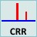
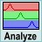
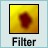
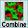
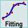

如果您已测量拉曼图像，只需将数据集拖放至"开始拉曼分析"拖放操作即可开始分析。对话框中的"提取并下一步"按钮将引导您完成分析的不同步骤。
开始拉曼分析
这将打开第一个分析对话框，即宇宙射线去除拖放操作：

宇宙射线去除去除宇宙射线后，您可以继续进行背景扣除：
现在数据已准备好进行进一步分析。下一步可以使用真组分分析。它有助于查找所有组分，并为每个组分创建精美的图像和光谱：

真组分分析如果需要，可以使用平滑算法非常漂亮地呈现结果组分图像：

图像平滑可以使用图像合并对话框将多个组分图像合并为单个多色位图：

图像合并如果您的测量因某些效应而出现峰位偏移，您可以使用高级拟合工具自动拟合您的峰：

高级拟合工具聚类分析有助于发现光谱中的差异以及测量中包含多少个组分：